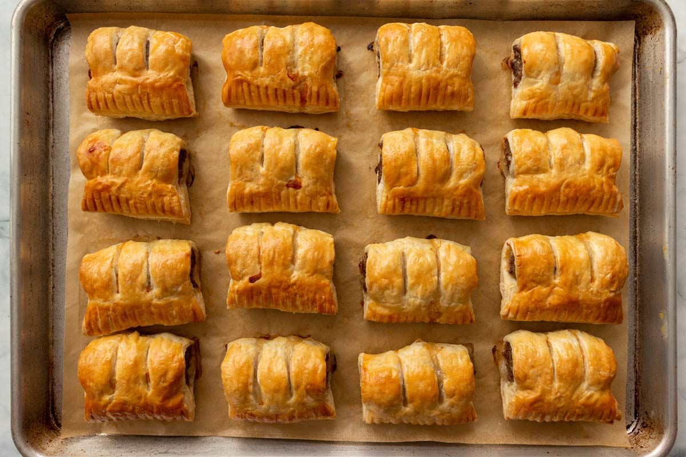

Saucijzenbroodjes (sausage rolls) is a Dutch dish consisting of meat that is wrapped in puff pastry. It is a popular snack that can be found at numerous Dutch fast food joints, street stands, bakeries, and train stations. Although the name suggests that the dish contains sausages, that is not the case–it is filled with ground beef that is spiced with nutmeg and black pepper.
Meal prep time : 1 hour
Servings : 16